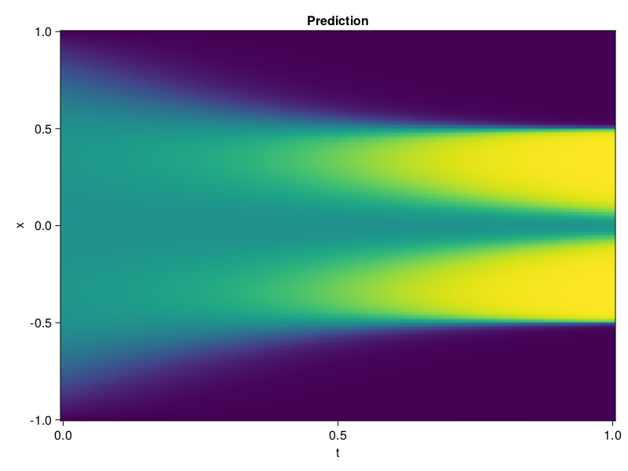

Allen-Cahn Equation with Sequential Training
In this tutorial we are going to solve the Allen-Cahn equation with periodic boundary condition from $t=0$ to $t=1$. The traning process is split into four stages, namely $t\in [0,0.25]$, $t\in [0.0,0.5]$, $t\in [0.0,0.75]$ and $t\in [0.0, 1.0]$.
using ModelingToolkit, IntervalSets
using Sophon
using Optimization, OptimizationOptimJL
@parameters t, x
@variables u(..)
Dₓ = Differential(x)
Dₓ² = Differential(x)^2
Dₜ = Differential(t)
eq = Dₜ(u(x, t)) - 0.0001 * Dₓ²(u(x, t)) + 5 * u(x,t) * (abs2(u(x,t)) - 1.0) ~ 0.0
domain = [x ∈ -1.0..1.0, t ∈ 0.0..0.25]
bcs = [u(x,0) ~ x^2 * cospi(x),
u(-1,t) ~ u(1,t)]
@named allen = PDESystem(eq, bcs, domain, [x, t], [u(x, t)])\[ \begin{align} - 0.0001 \frac{\mathrm{d}}{\mathrm{d}x} \frac{\mathrm{d}}{\mathrm{d}x} u\left( x, t \right) + 5 \left( -1 + \left|u\left( x, t \right)\right|^{2} \right) u\left( x, t \right) + \frac{\mathrm{d}}{\mathrm{d}t} u\left( x, t \right) =& 0 \end{align} \]
Then we define the neural net, the sampler, and the training strategy.
chain = FullyConnected(2, 1, tanh; hidden_dims=16, num_layers=4)
pinn = PINN(chain)
sampler = QuasiRandomSampler(500, (300, 100))
strategy = NonAdaptiveTraining(1, (50, 1))
prob = Sophon.discretize(allen, pinn, sampler, strategy)OptimizationProblem. In-place: true
u0: ComponentVector{Float64}(layer_1 = (weight = [0.6952801942825317 0.15851835906505585; 1.8956025838851929 -0.009450885467231274; … ; 0.12857088446617126 -1.7797218561172485; -1.1277623176574707 -1.1873475313186646], bias = [0.0; 0.0; … ; 0.0; 0.0;;]), layer_2 = (weight = [0.1163419559597969 0.5494769215583801 … -0.5270656943321228 0.096521757543087; 0.6840699911117554 -0.02205849066376686 … -0.5788602232933044 0.3194848299026489; … ; 0.2976059019565582 0.17083024978637695 … -0.6352930068969727 -0.020397989079356194; -0.6574029326438904 -0.40169966220855713 … 0.42417576909065247 -0.6880525350570679], bias = [0.0; 0.0; … ; 0.0; 0.0;;]), layer_3 = (weight = [-0.1358027160167694 -0.2495361864566803 … -0.4578174948692322 -0.39660176634788513; -0.4956052005290985 -0.13131451606750488 … 0.2508084177970886 0.38571786880493164; … ; 0.683607816696167 0.6451225876808167 … -0.06433318555355072 0.07671136409044266; -0.04272937402129173 0.6250970959663391 … -0.5793259143829346 0.4707948863506317], bias = [0.0; 0.0; … ; 0.0; 0.0;;]), layer_4 = (weight = [0.5732227563858032 -0.4081161916255951 … 0.4782882630825043 -0.28034427762031555; 0.11392764002084732 0.5158031582832336 … 0.3004055619239807 0.5645909905433655; … ; 0.2295437455177307 -0.5740566253662109 … -0.4619849622249603 0.2504669725894928; 0.23374322056770325 0.5962571501731873 … -0.0022176438942551613 0.47143977880477905], bias = [0.0; 0.0; … ; 0.0; 0.0;;]), layer_5 = (weight = [-0.18279960751533508 0.5936387777328491 … -0.4532889425754547 -0.2501356601715088], bias = [0.0;;]))We solve the equation sequentially in time.
function train(allen, prob, sampler, strategy)
bfgs = BFGS()
res = Optimization.solve(prob, bfgs; maxiters=2000)
for tmax in [0.5, 0.75, 1.0]
allen.domain[2] = t ∈ 0.0..tmax
data = Sophon.sample(allen, sampler)
prob = remake(prob; u0=res.u, p=data)
res = Optimization.solve(prob, bfgs; maxiters=2000)
end
return res
end
res = train(allen, prob, sampler, strategy)u: ComponentVector{Float64}(layer_1 = (weight = [1.0870186286886336 1.0945588058864717; 2.8233902627301686 0.554264120151644; … ; -0.12644451140527618 -1.3647898479996499; -0.6461404374505397 -0.48971411190410563], bias = [-1.6219498819727918; -0.7860828068134446; … ; 1.4961230040257538; 0.608517249614676;;]), layer_2 = (weight = [-0.04605921586950578 0.8718078912717799 … -1.3249081397153821 0.41495840399659545; 0.3289257778276268 0.331736125813103 … -0.55999825015041 0.4193517640752318; … ; 1.595119865615989 0.8100106298153876 … -1.2677353899689847 -0.7723313468157396; -0.6742302658879155 -0.30217285741555333 … 0.5920032207747835 -0.3503729528280204], bias = [-0.6903077158252181; 0.5358835471112484; … ; -0.6139204115673608; -0.1806558891031137;;]), layer_3 = (weight = [-0.42432686849788187 -0.4121101357444635 … -0.21800016451950582 0.002608532211791482; -0.5078770173039612 0.23810427409692858 … 0.27472111181112646 0.8195139168951215; … ; 0.1747083062350204 0.9563259511029119 … -0.21066481112008767 0.24615164569443876; -0.6583774245016776 0.34902228314577133 … -1.3820281241826529 1.1425065656415658], bias = [0.49052768780522427; 0.28962412120087355; … ; 0.32547939674055787; -0.03683214444980665;;]), layer_4 = (weight = [0.27753875174145987 -0.47009444309613496 … 0.27777324393177794 -0.5188040760161129; 0.1346778564978428 -0.02623985720361099 … -0.24046144261279692 0.2726412479033426; … ; -0.35063911265635744 -0.6234128125219802 … -0.6477705681301847 -0.2892394404262893; 0.48515254112290007 0.22826052531794147 … -0.023866879915927515 0.6241810675228829], bias = [-0.452478625603373; 0.09272907034263356; … ; 0.04323787904678854; 0.18553922465657838;;]), layer_5 = (weight = [-0.423470811606618 0.46315851777158606 … -0.4063798433738166 -0.00649074132904067], bias = [-0.5082743826230744;;]))Let's plot the result.
using CairoMakie
phi = pinn.phi
xs, ts = [infimum(d.domain):0.01:supremum(d.domain) for d in allen.domain]
axis = (xlabel="t", ylabel="x", title="Prediction")
u_pred = [sum(pinn.phi([x, t], res.u)) for x in xs, t in ts]
fig, ax, hm = heatmap(ts, xs, u_pred', axis=axis)